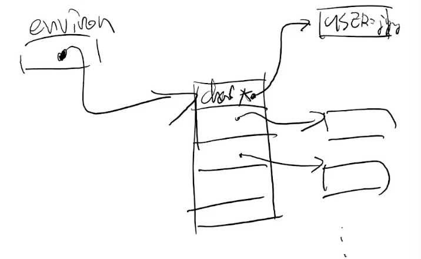
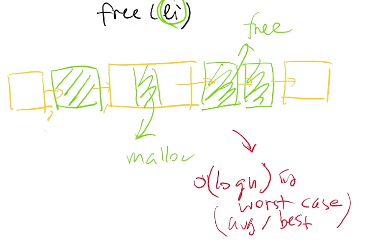
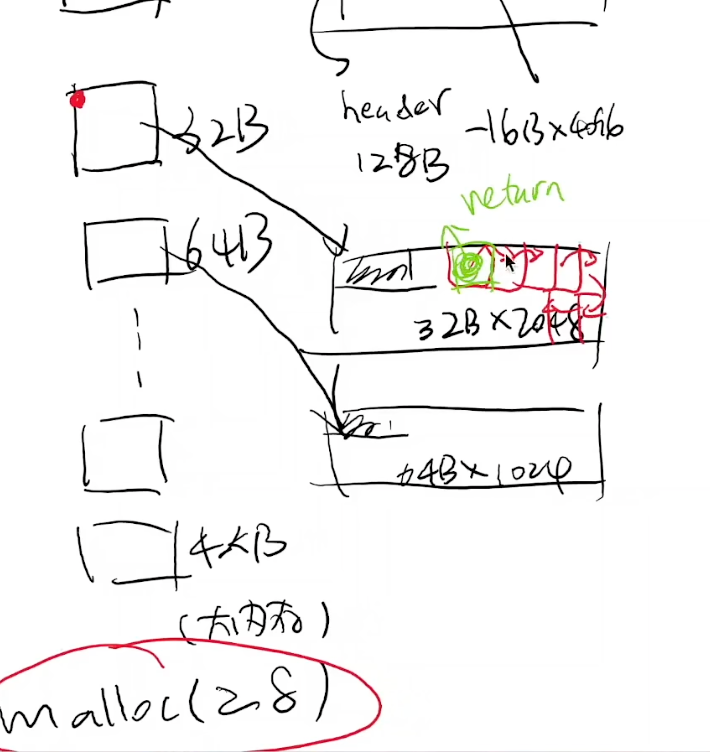
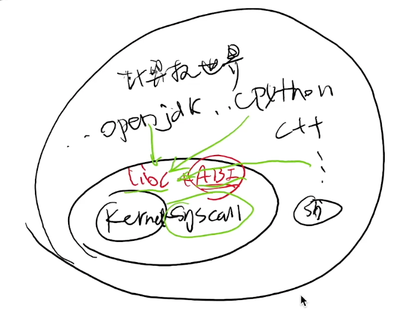

C 标准库的实现
Overview
复习
- sh-xv6.c: 仅依赖系统调用的 “最小” 命令行 Shell
本次课回答的问题
- Q: 如何在系统调用之上构建程序能够普遍受惠的标准库？
本次课主要内容
- C 标准库设计与实现
- 基于 libc 的应用程序
一、熟悉又陌生的 libc
1、为什么需要 libc?
“裸奔” 编程：能用 (而且绝对够用)，但不好用
long syscall(int num, ...) {
va_list ap;
va_start(ap, num);
register long a0 asm ("rax") = num;
register long a1 asm ("rdi") = va_arg(ap, long);
register long a2 asm ("rsi") = va_arg(ap, long);
register long a3 asm ("rdx") = va_arg(ap, long);
register long a4 asm ("r10") = va_arg(ap, long);
va_end(ap);
asm volatile("syscall"
: "+r"(a0) : "r"(a1), "r"(a2), "r"(a3), "r"(a4)
: "memory", "rcx", "r8", "r9", "r11");
return a0;
}
2、任何程序都用得上的定义
Freestanding 环境下也可以使用的定义
- stddef.h -
size_t - stdint.h -
int32_t,uint64_t - stdbool.h -
bool,true,false - float.h
- limits.h
- stdarg.h
- syscall 就用到了 (但 syscall0, syscall1, ... 更高效)
- inttypes.h
- 回答了你多年来的疑问！
- 在你读过了小白阶段以后，就真的是 friendly manual 了
3、然后，系统调用也要用得方便！
系统调用是操作系统 “紧凑” 的最小接口。并不是所有系统调用都像 fork 一样可以直接使用。
低情商 API：
#include <unistd.h>
int main() {
extern char **environ;
char *argv[] = { "echo", "hello", "world", NULL, };
if (execve(argv[0], argv, environ) < 0) {
perror("exec");
}
}
// exec: No such file or directory
// execve 的第一个参数 argv[0] 必须是合法路径
// 换成 /bin/echo 就可以输出 hello world
高情商 API：
#include <unistd.h>
#include <stdlib.h>
int main() {
execlp("echo", "echo", "hello", "world", NULL);
}
可以在环境变量中找到 echo
$ gcc a.c && ./a.out
hello world
$ strace ./a.out
...
execve("/usr/local/sbin/echo", ["echo", "hello", "world"], 0x7ffea91115d8 /* 22 vars */) = -1 ENOENT (No such file or directory)
execve("/usr/local/bin/echo", ["echo", "hello", "world"], 0x7ffea91115d8 /* 22 vars */) = -1 ENOENT (No such file or directory)
execve("/usr/sbin/echo", ["echo", "hello", "world"], 0x7ffea91115d8 /* 22 vars */) = -1 ENOENT (No such file or directory)
execve("/usr/bin/echo", ["echo", "hello", "world"], 0x7ffea91115d8 /* 22 vars */) = 0
...
write(1, "hello world\n", 12hello world
) = 12
二、封装 (1): 纯粹的计算
1、string.h: 字符串/数组操作
简单，不简单
void *memset(void *s, int c, size_t n) {
for (size_t i = 0; i < n; i++) {
((char *)s)[i] = c;
}
return s;
}
让我们看看 clang 把它编译成了什么……
- 以及，线程安全性？memset-race.c
- 标准库只对 “标准库内部数据” 的线程安全性负责
- 例子：printf 的 buffer
#include "thread.h"
char buf[1 << 30];
void foo(int id) {
memset(buf, '0' + id, sizeof(buf) - 1);
}
int main() {
for (int i = 0; i < 4; i++)
create(foo);
join();
puts(buf);
}
2、排序和查找
低情商 (低配置) API
void qsort(void *base, size_t nmemb, size_t size,
int (*compar)(const void *, const void *));
void *bsearch(const void *key, const void *base,
size_t nmemb, size_t size,
int (*compar)(const void *, const void *));
高情商 API
3、更多的例子
RTFM!
- 更多的 stdlib.h 中的例子
- atoi, atol, atoll, strtoull, ...
- rand (注意线程安全), ...
- setjmp.h
- 体会到我们精心设计的良苦用心？
- 一次掉队，终身掉队 😂
- 体会到我们精心设计的良苦用心？
- math.h
- 这玩意复杂了; 《操作系统》课直接摆烂
- Automatically improving accuracy for floating point expressions (PLDI'15, Distinguished Paper 🏅)
- 这玩意复杂了; 《操作系统》课直接摆烂
三、封装 (2): 文件描述符
1、stdio.h: 你熟悉的味道
FILE * 背后其实是一个文件描述符
- 我们可以用 gdb 查看具体的
FILE *(例如p *fp,p *stdin,p *stdout)- 可以 “窥探” 到 glibc 的一些内部实现（这些参数 _fileno, _IO_buf_ptr, _IO_buf_end, _IO_buf_base）
- 可以加载 glibc 的 debug symbols
- 在这门课上不推荐：你调试起来会很浪费时间
- 封装了文件描述符上的系统调用 (fseek, fgetpos, ftell, feof, ...)
vprintf 系列
- 使用了
stdarg.h的参数列表
int vfprintf(FILE *stream, const char *format, va_list ap);
int vasprintf(char **ret, const char *format, va_list ap);
2、popen 和 pclose
我们在 dosbox-hack.c 中使用了它
- 一个设计有缺陷的 API
- Since a pipe is by definition unidirectional, the type argument may specify only reading or writing, not both; the resulting stream is correspondingly read-only or write-only.
高情商 API (现代编程语言)
let dir_checksum = {
Exec::shell("find . -type f")
| Exec::cmd("sort") | Exec::cmd("sha1sum")
}.capture()?.stdout_str();
四、封装 (3): 更多的进程/操作系统功能
1、err, error, perror
所有 API 都可能失败
这个 “No such file or directory” 似乎见得有点多？
cat nonexist.c, wc nonexist.c都是同样的 error message- 这不是巧合！
- 我们也可以 “山寨” 出同样的效果
warn("%s", fname);(观察 strace)err可以额外退出程序
- errno 是进程共享还是线程独享？
- 这下知道协程的轻量了吧
2、environ (7)
我们也可以实现自己的 env.c
- 问题来了：environ 是谁赋值的？
- 这个函数又是在哪里定义的？
#include <stdio.h>
int main() {
extern char **environ;
for (char **env = environ; *env; env++) {
printf("%s\n", *env);
}
}
**environ 解释图：

$ gcc -g -static a.c
$ ./a.out
// 一堆环境变量
$ gdb a.out
(gdb) starti
Starting program: /root/demo/a.out
Program stopped.
0x00007ffff7fd0100 in ?? () from /lib64/ld-linux-x86-64.so.2
(gdb) p (char**)environ
$1 = (char **) 0x0
(gdb) wa (char**)environ
Watchpoint 1: (char**)environ
(gdb) c
Continuing.
Watchpoint 1: (char**)environ
Old value = (char **) 0x0
New value = (char **) 0x7fffffffe5a8
_init (argc=1, argv=<optimized out>, envp=<optimized out>)
at init-first.c:77
77 init-first.c: No such file or directory.
RTFM 后
- 对环境变量的理解又上升了
五、封装 (4): 地址空间
1、malloc 和 free
Specification 很简单 (同 Lab1)
- 在大区间 [L,R) 中维护互不相交的区间的集合
M={[ℓ0,r0),[ℓ1,r1),…,[ℓn,rn)}
- malloc(s) - 返回一段大小为s的区间
- 必要时可以向操作系统申请额外的 [L,R) (观察 strace)
- 允许在内存不足时 “拒绝” 请求
- free(ℓ,r) - 给定ℓ，删除[ℓ,r)∈M
- 是否想起了《算法导论》？

多线程安全
- Scalability 就是个很大的问题了
2、实现高效的 malloc/free
Premature optimization is the root of all evil.
——D. E. Knuth
重要的事情说三遍：
- 脱离 workload 做优化就是耍流氓
- 脱离 workload 做优化就是耍流氓
- 脱离 workload 做优化就是耍流氓
- 在开始考虑性能之前，理解你需要考虑什么样的性能
然后，去哪里找 workload?
- 当然是 paper 了 (顺便白得一个方案)
- Mimalloc: free list sharding in action (APLAS'19)
3、Workload 分析
指导思想：O(n) 大小的对象分配后至少有 Ω(n) 的读写操作，否则就是 performance bug (不应该分配那么多)。
- 越小的对象创建/分配越频繁
- 字符串、临时对象等 (几十到几百字节)；生存周期可长可短
- 较为频繁地分配中等大小的对象
- 较大的数组、复杂的对象；更长的生存周期
- 低频率的大对象
- 巨大的容器、分配器；很长的生存周期
- 并行、并行、再并行
- 所有分配都会在所有处理器上发生
- 使用链表/区间树 (first fit) 可不是个好想法
4、malloc, Fast and Slow
设置两套系统：
- fast path
- 性能极好、并行度极高、覆盖大部分情况
- 但有小概率会失败 (fall back to slow path)
- slow path
- 不在乎那么快
- 但把困难的事情做好
- 计算机系统里有很多这样的例子 (比如 cache)
人类也是这样的系统
- Daniel Kahneman. Thinking, Fast and Slow. Farrar, Straus and Giroux, 2011.
5、malloc: Fast Path 设计
使所有 CPU 都能并行地申请内存
- 线程都事先瓜分一些 “领地” (thread-local allocation buffer)
- 默认从自己的领地里分配
- 除了在另一个 CPU 释放，acquire lock 几乎总是成功
- 如果自己的领地不足，就从全局的池子里借一点

不要在乎一点小的浪费
- 这就是为什么要对齐到 2^k 字节
6、小内存：Segregated List
分配: Segregated List (Slab)
- 每个 slab 里的每个对象都一样大
- 每个线程拥有每个对象大小的 slab
- fast path → 立即在线程本地分配完成
- slow path → pgalloc()
- 两种实现
- 全局大链表 v.s. List sharding (per-page 小链表)
回收
- 直接归还到 slab 中
- 注意这可能是另一个线程持有的 slab，需要 per-slab 锁 (小心数据竞争)
7、大内存：一把大锁保平安
Buddy system (1963)
- 如果你想分配 1, 2, 3, 4, ... n 个连续的页面？
- 例如：64 KB/页面
- 那就 first fit 或者 best fit 吧……
你只需要一个数据结构解决问题
- 区间树；线段树……
8、现实世界中的 malloc/free
以上就是所有现代 malloc/free 实现的基础
- 当然，实际情况会复杂一些，性能也是锱铢必较
- glibc: arena → heap → tcache (thread-local)
- tcmalloc: thread-caching malloc, mimalloc

- OpenJDK: ZGC: region based + tlab (thread-local)
- managed memory 允许 object move，因此复杂得多......
六、无止境地封装
1、想知道有没有更多的功能？
RTFM: The GNU C Library, RTFSC: Newlib
- 都不太长 (glibc 的手册和 newlib 的源码) 也好读
- Computer System 系列课程的重要目标：摆正看手册的心态
你会发现很多宝藏
- Globbing
- Regex
- Shell-style word expansion
- ……
2、我们还可以……
走出 C 的领域，基于 libc 实现
- C++ 编译器
- 继续实现 C++ Standard Library
- 继续实现 OpenJDK (HotSpot)
- 继续实现 V8 (JavaScript)
- CPython
- Go
- 再之后 Go 就可以自己编译自己了 (Goodbye, C!)
Eventually, (千疮百孔) 的整个计算机世界！
- C is not a low-level language (CACM'18)
- C isn't a programming language any more (Gankra's Blog)
总结
本次课回答的问题
- Q: 如何在系统调用之上构建程序能够普遍受惠的标准库？

Take-away messages
- libc
- RTFM; RTFSC: 充满了宝藏
- 性能优化中的 fast/slow path
- 然后，你拥有了整个世界！